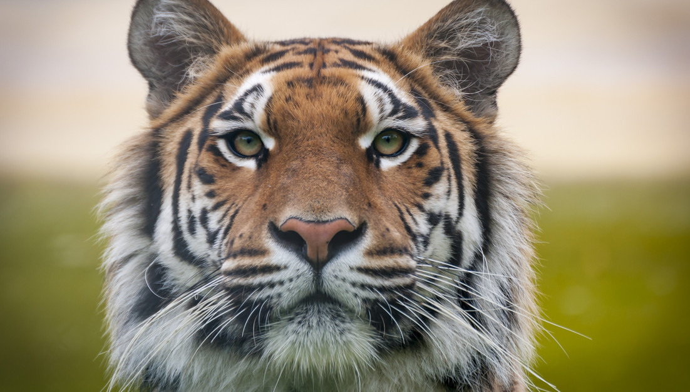
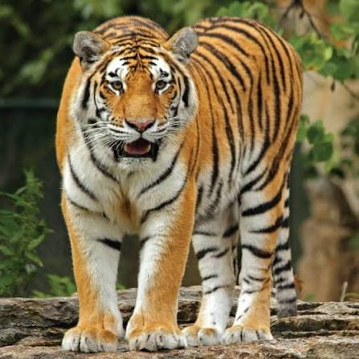

Тигр — найбільший представник родини котових. Він відрізняється своїм характерним смугастим забарвленням, яке допомагає йому маскуватися у високій траві та чагарниках.
Ці хижаки є переважно одинаками і полюють на великих копитних, таких як олені та кабани. Тигри мають надзвичайну силу та гнучкість, що робить їх досконалими мисливцями.
На жаль, через браконьєрство та втрату природного середовища існування, багато підвидів тигра сьогодні знаходяться під загрозою повного зникнення.